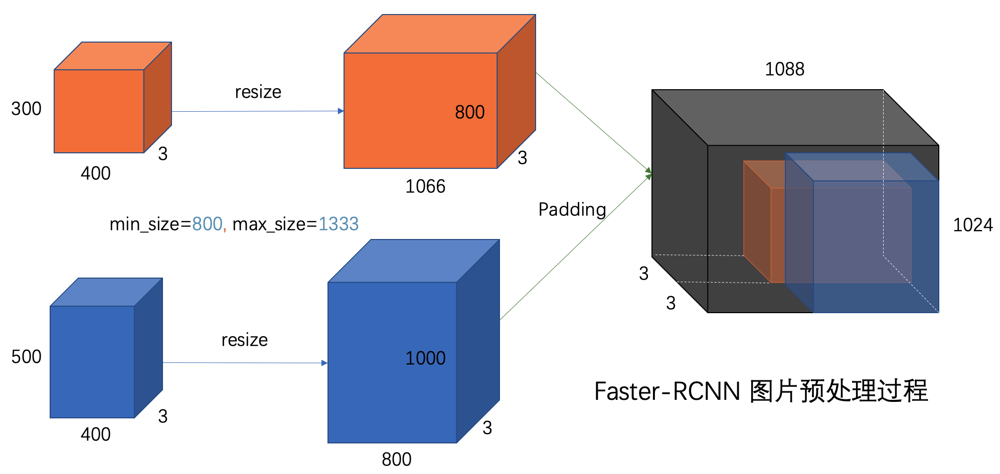
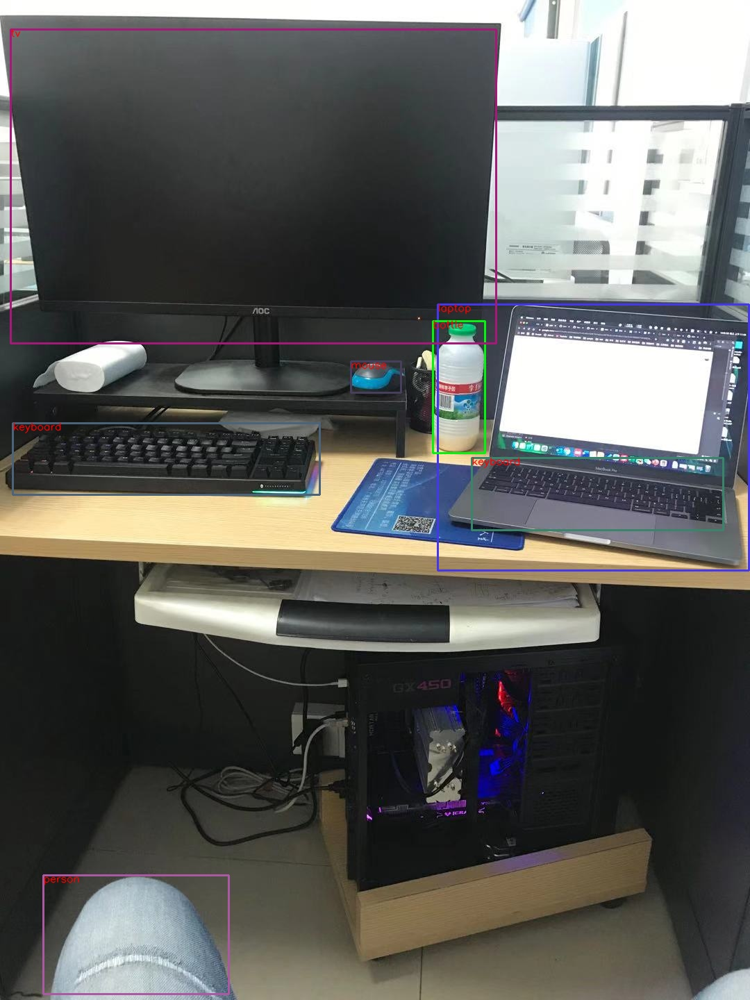

从源码学习 Faster-RCNN 说在前面的话 ：
一直认为光读论文没什么用，因为很多实现的trick是很难用文字可以表达的，结合代码和论文往往可以更好地get到作者的意思。在看本文之前，强烈建议阅读[1] ，对Faster-RCNN的大致处理流程有个感性的认识。此外，声明一点，在本文中，RoI(Region of Interest)和proposal你可以认为就是一个东西。
Faster-RCNN已经被收录到了Pytorch官方实现中，在 torchvision.models.detection.faster_rcnn中。
1. GenerializedRCNN类 FasterRCNN类的继承关系为 FasterRCNN --> GenerializedRCNN --> nn.Module，我们先看一下GenerializedRCNN类的实现
1 2 3 4 5 6 7 8 9 10 11 12 13 14 15 16 17 18 19 20 21 class GeneralizedRCNN (nn.Module) : """ Main class for Generalized R-CNN. Arguments: backbone (nn.Module): rpn (nn.Module): heads (nn.Module): takes the features + the proposals from the RPN and computes detections / masks from it. transform (nn.Module): performs the data transformation from the inputs to feed into the model """ def __init__ (self, backbone, rpn, roi_heads, transform) : super(GeneralizedRCNN, self).__init__() self.transform = transform self.backbone = backbone self.rpn = rpn self.roi_heads = roi_heads self._has_warned = False
正如文档所说，GenerializedRCNN类就是一个对Faster-RCNN模型的抽象，主要包含3大部分：backbone，RPN和roi_heads，三者的功能分别是提取特征，得到region proposals，对region proposals中的物体进行分类和bbox regression，具体的细节可以参阅[1] 。至于这里的transformer，就是用于输入backbone之前的数据处理的。
再看下GenerializedRCNN类的forawrd()函数，如下：
1 2 3 4 5 6 7 8 9 10 11 12 13 14 15 16 17 18 19 20 21 22 23 24 25 26 27 28 29 30 31 32 33 34 35 36 37 38 39 40 41 42 43 44 45 46 47 48 49 50 51 52 def forward (self, images, targets=None) : """ Arguments: images (list[Tensor]): images to be processed targets (list[Dict[Tensor]]): ground-truth boxes present in the image (optional) Returns: result (list[BoxList] or dict[Tensor]): the output from the model. During training, it returns a dict[Tensor] which contains the losses. During testing, it returns list[BoxList] contains additional fields like `scores`, `labels` and `mask` (for Mask R-CNN models). """ if self.training and targets is None : raise ValueError("In training mode, targets should be passed" ) original_image_sizes = torch.jit.annotate(List[Tuple[int, int]], []) for img in images: val = img.shape[-2 :] assert len(val) == 2 original_image_sizes.append((val[0 ], val[1 ])) images, targets = self.transform(images, targets) features = self.backbone(images.tensors) if isinstance(features, torch.Tensor): features = OrderedDict([('0' , features)]) proposals, proposal_losses = self.rpn(images, features, targets) detections, detector_losses = self.roi_heads(features, proposals, images.image_sizes, targets) detections = self.transform.postprocess(detections, images.image_sizes, original_image_sizes) losses = {} losses.update(detector_losses) losses.update(proposal_losses) if torch.jit.is_scripting(): if not self._has_warned: warnings.warn("RCNN always returns a (Losses, Detections) tuple in scripting" ) self._has_warned = True return (losses, detections) else : return self.eager_outputs(losses, detections)
根据代码，我们可以很清晰的看到大致的处理流程，也就是代码中注释的NOET 1-6，由于2-6步都是比较general的步骤，这里讲一下数据预处理的步骤：
对图片的数据处理倒很常见，首先缩放倒固定的大小，然后归一化到$[0,1]$之间，再减去ImageNet的均值，除以方差。而在训练阶段，对bbox的ground truth，由于网络最终实际上是在固定大小的图片上进行训练的，因此需要对原始的bbox gt也进行相应的缩放。而在实际test/inference阶段，我们肯定希望最终结果的bbox是基于原始输入图像（即缩放前的图片）而言的，因此在数据预处理时，我们要记录缩放的一些信息。
在得到了detections之后，我们需要按照预处理时存储的图片原始信息进行缩放变换。
数据预处理和后处理的整体流程如下图所示：
而中间的三大组建处理流程则如下图所示：
2. FasterRCNN类 为了更好的说明问题，以及方便表达，下文中统一使用下面这个例子来debug
1 2 3 4 5 6 7 8 9 from torchvision.models.detection.faster_rcnn import fasterrcnn_resnet50_fpnimport torchmodel = fasterrcnn_resnet50_fpn() model.eval() x = [torch.rand(3 , 300 , 400 ), torch.rand(3 , 500 , 400 )] predictions = model(x) print(predictions)
Let‘s get started!
1 2 3 4 5 6 7 8 9 10 11 12 13 14 15 16 17 18 19 20 21 22 23 24 25 26 27 28 29 30 31 32 33 34 35 36 37 38 39 40 41 42 43 44 45 46 47 48 49 50 51 52 53 54 55 56 57 58 59 60 61 62 63 64 65 66 67 68 69 70 71 72 73 74 75 76 77 78 79 80 81 82 83 84 85 86 87 88 89 90 91 92 93 94 95 96 class FasterRCNN (GeneralizedRCNN) : """ Implements Faster R-CNN. ... """ def __init__ (self, backbone, num_classes=None, # transform parameters min_size=800 , max_size=1333 , image_mean=None, image_std=None, # RPN parameters rpn_anchor_generator=None, rpn_head=None, rpn_pre_nms_top_n_train=2000 , rpn_pre_nms_top_n_test=1000 , rpn_post_nms_top_n_train=2000 , rpn_post_nms_top_n_test=1000 , rpn_nms_thresh=0.7 , rpn_fg_iou_thresh=0.7 , rpn_bg_iou_thresh=0.3 , rpn_batch_size_per_image=256 , rpn_positive_fraction=0.5 , # Box parameters box_roi_pool=None, box_head=None, box_predictor=None, box_score_thresh=0.05 , box_nms_thresh=0.5 , box_detections_per_img=100 , box_fg_iou_thresh=0.5 , box_bg_iou_thresh=0.5 , box_batch_size_per_image=512 , box_positive_fraction=0.25 , bbox_reg_weights=None) : if not hasattr(backbone, "out_channels" ): raise ValueError( "backbone should contain an attribute out_channels " "specifying the number of output channels (assumed to be the " "same for all the levels)" ) assert isinstance(rpn_anchor_generator, (AnchorGenerator, type(None ))) assert isinstance(box_roi_pool, (MultiScaleRoIAlign, type(None ))) if num_classes is not None : if box_predictor is not None : raise ValueError("num_classes should be None when box_predictor is specified" ) else : if box_predictor is None : raise ValueError("num_classes should not be None when box_predictor " "is not specified" ) out_channels = backbone.out_channels if rpn_anchor_generator is None : anchor_sizes = ((32 ,), (64 ,), (128 ,), (256 ,), (512 ,)) aspect_ratios = ((0.5 , 1.0 , 2.0 ),) * len(anchor_sizes) rpn_anchor_generator = AnchorGenerator( anchor_sizes, aspect_ratios ) if rpn_head is None : rpn_head = RPNHead( out_channels, rpn_anchor_generator.num_anchors_per_location()[0 ] ) rpn_pre_nms_top_n = dict(training=rpn_pre_nms_top_n_train, testing=rpn_pre_nms_top_n_test) rpn_post_nms_top_n = dict(training=rpn_post_nms_top_n_train, testing=rpn_post_nms_top_n_test) rpn = RegionProposalNetwork( rpn_anchor_generator, rpn_head, rpn_fg_iou_thresh, rpn_bg_iou_thresh, rpn_batch_size_per_image, rpn_positive_fraction, rpn_pre_nms_top_n, rpn_post_nms_top_n, rpn_nms_thresh) if box_roi_pool is None : box_roi_pool = MultiScaleRoIAlign( featmap_names=['0' , '1' , '2' , '3' ], output_size=7 , sampling_ratio=2 ) if box_head is None : resolution = box_roi_pool.output_size[0 ] representation_size = 1024 box_head = TwoMLPHead( out_channels * resolution ** 2 , representation_size) if box_predictor is None : representation_size = 1024 box_predictor = FastRCNNPredictor( representation_size, num_classes) roi_heads = RoIHeads( box_roi_pool, box_head, box_predictor, box_fg_iou_thresh, box_bg_iou_thresh, box_batch_size_per_image, box_positive_fraction, bbox_reg_weights, box_score_thresh, box_nms_thresh, box_detections_per_img) if image_mean is None : image_mean = [0.485 , 0.456 , 0.406 ] if image_std is None : image_std = [0.229 , 0.224 , 0.225 ] transform = GeneralizedRCNNTransform(min_size, max_size, image_mean, image_std) super(FasterRCNN, self).__init__(backbone, rpn, roi_heads, transform)
通过代码super(FasterRCNN, self).__init__(backbone, rpn, roi_heads, transform)可以看到，FasterRCNN类继承了GeneralizedRCNNTransform类。那这4个组件分别是什么呢？我们分别来看下。
2.1 backbone 这东西就不用多讲了，backbone网络，可以是VGG、ResNet或其他任何基础网络结构。
1 2 3 4 5 if image_mean is None : image_mean = [0.485 , 0.456 , 0.406 ] if image_std is None : image_std = [0.229 , 0.224 , 0.225 ] transform = GeneralizedRCNNTransform(min_size, max_size, image_mean, image_std)
从这几行代码，熟悉的朋友肯定知道这几个数字的含义，其实就是ImageNet的均值和方差，所以，这里在做的工作就是mean-std 归一化和图片大小的缩放。
2.3 RPN RPN是Faster-RCNN中的重头戏。从代码中可以看出，将RPN分成了两块，即rpn_anchor_generator和rpn_head，我们先看前者。
1 2 3 4 5 6 if rpn_anchor_generator is None : anchor_sizes = ((32 ,), (64 ,), (128 ,), (256 ,), (512 ,)) aspect_ratios = ((0.5 , 1.0 , 2.0 ),) * len(anchor_sizes) rpn_anchor_generator = AnchorGenerator( anchor_sizes, aspect_ratios )
可以看到，对于每个anchor size，都会对应有3种aspect ratio，并构造出一个AnchorGenerator对象。细心的你可能会发现，为啥anchor_size和aspect_ratios都是二维的tuple？按照Faster-RCNN中的理论，RPN接受一个feature map，然后按照不同size和不同aspect ratio组合，得到很多不同尺寸的anchor，两个一维的tuple就够了呀？记住，这里是为了更generally地集成其他backbone，例如多尺度的FPN，分别用不同尺度的特征来负责不同尺度大小的anchor，所以二维元组中的每一个代表是一个尺度。
OK，上面这个trick知道了以后，AnchorGenerator又是怎么实现的呢？别急，慢慢看
1 2 3 4 5 6 7 8 9 10 11 12 13 14 15 16 17 18 19 20 21 22 23 24 25 26 27 28 29 30 31 32 33 34 35 36 37 38 39 40 41 42 43 44 45 46 47 48 49 50 51 52 53 54 55 56 57 58 59 60 61 62 63 64 65 66 67 68 69 70 71 72 73 74 75 76 77 class AnchorGenerator (nn.Module) : """ Module that generates anchors for a set of feature maps and image sizes. The module support computing anchors at multiple sizes and aspect ratios per feature map. sizes and aspect_ratios should have the same number of elements, and it should correspond to the number of feature maps. sizes[i] and aspect_ratios[i] can have an arbitrary number of elements, and AnchorGenerator will output a set of sizes[i] * aspect_ratios[i] anchors per spatial location for feature map i. Arguments: sizes (Tuple[Tuple[int]]): aspect_ratios (Tuple[Tuple[float]]): """ def __init__ ( self, sizes=(128 , 256 , 512 ) , aspect_ratios=(0.5 , 1.0 , 2.0 ) , ) : super(AnchorGenerator, self).__init__() if not isinstance(sizes[0 ], (list, tuple)): sizes = tuple((s,) for s in sizes) if not isinstance(aspect_ratios[0 ], (list, tuple)): aspect_ratios = (aspect_ratios,) * len(sizes) assert len(sizes) == len(aspect_ratios) self.sizes = sizes self.aspect_ratios = aspect_ratios self.cell_anchors = None self._cache = {} def generate_anchors (self, scales, aspect_ratios, dtype=torch.float32, device="cpu" ) : scales = torch.as_tensor(scales, dtype=dtype, device=device) aspect_ratios = torch.as_tensor(aspect_ratios, dtype=dtype, device=device) h_ratios = torch.sqrt(aspect_ratios) w_ratios = 1 / h_ratios ws = (w_ratios[:, None ] * scales[None , :]).view(-1 ) hs = (h_ratios[:, None ] * scales[None , :]).view(-1 ) base_anchors = torch.stack([-ws, -hs, ws, hs], dim=1 ) / 2 return base_anchors.round() def set_cell_anchors (self, dtype, device) : if self.cell_anchors is not None : cell_anchors = self.cell_anchors assert cell_anchors is not None if cell_anchors[0 ].device == device: return cell_anchors = [ self.generate_anchors( sizes, aspect_ratios, dtype, device ) for sizes, aspect_ratios in zip(self.sizes, self.aspect_ratios) ] self.cell_anchors = cell_anchors def num_anchors_per_location (self) : return [len(s) * len(a) for s, a in zip(self.sizes, self.aspect_ratios)]
我们从Faster-RCNN的rpn_anchor_generator可以看出，用的是5种尺度(32, 64, 128, 256, 512)和3种aspect ratio(0.5, 1.0, 2.0)，组合起来就是15种anchors。也就是下面这15个组合，注意，anchor是以(0,0)为基准的，并且得到的anchors是在feature map上每个cell处的。
1 2 3 4 5 6 7 8 9 10 11 12 13 14 15 [ -23., -11., 23., 11.] [ -16., -16., 16., 16.] # scale = 32 [ -11., -23., 11., 23.] [ -45., -23., 45., 23.] [ -32., -32., 32., 32.] # scale = 64 [ -23., -45., 23., 45.] [ -91., -45., 91., 45.] [ -64., -64., 64., 64.] # scale = 128 [ -45., -91., 45., 91.] [-181., -91., 181., 91.] [-128., -128., 128., 128.] # scale = 256 [ -91., -181., 91., 181.] [-362., -181., 362., 181.] [-256., -256., 256., 256.] # scale = 512 [-181., -362., 181., 362.]
在得到了每个cell（也就是feature map上每个位置处）的anchors大小后，我们怎么得到整个图片上的anchors呢？根据CNN中卷积的特点，我们可以知道feature map上的每个cell其实是有一定程度的感受野大小的，也feature map size关于原始输入图片的缩放倍数，在RPN里面，这个变量被叫做stride，计算方法为$\text{stride}=\frac{\text{feature map size}}{\text{img size}}$。
好，我们来看下代码是怎么实现的。主要关注grid_anchors()函数就OK了。
1 2 3 4 5 6 7 8 9 10 11 12 13 14 15 16 17 18 19 20 21 22 23 24 25 26 27 28 29 30 31 32 33 34 35 36 37 38 39 40 41 42 43 44 45 46 47 48 49 50 51 52 53 54 55 56 57 58 59 60 61 62 63 64 def grid_anchors (self, grid_sizes, strides) : anchors = [] cell_anchors = self.cell_anchors assert cell_anchors is not None for size, stride, base_anchors in zip( grid_sizes, strides, cell_anchors ): grid_height, grid_width = size stride_height, stride_width = stride device = base_anchors.device shifts_x = torch.arange( 0 , grid_width, dtype=torch.float32, device=device ) * stride_width shifts_y = torch.arange( 0 , grid_height, dtype=torch.float32, device=device ) * stride_height shift_y, shift_x = torch.meshgrid(shifts_y, shifts_x) shift_x = shift_x.reshape(-1 ) shift_y = shift_y.reshape(-1 ) shifts = torch.stack((shift_x, shift_y, shift_x, shift_y), dim=1 ) anchors.append( (shifts.view(-1 , 1 , 4 ) + base_anchors.view(1 , -1 , 4 )).reshape(-1 , 4 ) ) return anchors def cached_grid_anchors (self, grid_sizes, strides) : key = str(grid_sizes) + str(strides) if key in self._cache: return self._cache[key] anchors = self.grid_anchors(grid_sizes, strides) self._cache[key] = anchors return anchors def forward (self, image_list, feature_maps) : grid_sizes = list([feature_map.shape[-2 :] for feature_map in feature_maps]) image_size = image_list.tensors.shape[-2 :] dtype, device = feature_maps[0 ].dtype, feature_maps[0 ].device strides = [[torch.tensor(image_size[0 ] / g[0 ], dtype=torch.int64, device=device), torch.tensor(image_size[1 ] / g[1 ], dtype=torch.int64, device=device)] for g in grid_sizes] self.set_cell_anchors(dtype, device) anchors_over_all_feature_maps = self.cached_grid_anchors(grid_sizes, strides) anchors = torch.jit.annotate(List[List[torch.Tensor]], []) for i, (image_height, image_width) in enumerate(image_list.image_sizes): anchors_in_image = [] for anchors_per_feature_map in anchors_over_all_feature_maps: anchors_in_image.append(anchors_per_feature_map) anchors.append(anchors_in_image) anchors = [torch.cat(anchors_per_image) for anchors_per_image in anchors] self._cache.clear() return anchors
从grid_anchors()函数中可以看出，会先根据stride和feature map的大小（也就是grid_weight和grid_height）生成一个网格，网格上第$(i,j)$个元素代表的是第$(i,j)$位置处的anchors相对于base_anchors的偏移量。
为啥要偏移量这个概念呢？别忘了，我们在上一步每个cell处生成anchors的时候，中心是(0,0)。如果加上现在的偏移量，即通过anchors.append((shifts.view(-1, 1, 4) + base_anchors.view(1, -1, 4)).reshape(-1, 4))这条语句，就是每个cell真正的anchor位置了！一图胜千语，看下面这个图你肯定就明白了。
现在所有的anchors都得到了，接下来就要通过几层网络来判断每个 anchor 是否有目标，同时还需要回归有 bounding box 需要的4个值 $(dx,dy,dw,dh)$。也就是rpn_head了，相比rpn_anchor_generator，还是很简单的，其实也就是个RPNHead类对象，代码如下：
1 2 3 4 5 6 7 8 9 10 11 12 13 14 15 16 17 18 19 20 21 22 23 24 25 26 27 28 29 30 31 32 class RPNHead (nn.Module) : """ Adds a simple RPN Head with classification and regression heads Arguments: in_channels (int): number of channels of the input feature num_anchors (int): number of anchors to be predicted """ def __init__ (self, in_channels, num_anchors) : super(RPNHead, self).__init__() self.conv = nn.Conv2d( in_channels, in_channels, kernel_size=3 , stride=1 , padding=1 ) self.cls_logits = nn.Conv2d(in_channels, num_anchors, kernel_size=1 , stride=1 ) self.bbox_pred = nn.Conv2d( in_channels, num_anchors * 4 , kernel_size=1 , stride=1 ) for l in self.children(): torch.nn.init.normal_(l.weight, std=0.01 ) torch.nn.init.constant_(l.bias, 0 ) def forward (self, x) : logits = [] bbox_reg = [] for feature in x: t = F.relu(self.conv(feature)) logits.append(self.cls_logits(t)) bbox_reg.append(self.bbox_pred(t)) return logits, bbox_reg
其实无非就是几层全连接和激活函数。需要注意一下的是，RPN_head的输入通道数就是backbone网络得到的feature map的通道数，在Faster-RCNN代码中，我们也可以很明显地确认到这一点：
1 2 3 4 5 out_channels = backbone.out_channels rpn_head = RPNHead( out_channels, rpn_anchor_generator.num_anchors_per_location()[0 ] )
那RPN_head的输入通道数呢？显然有两部分，第一部分是判断每个anchor里面是否有物体的logits，第二部分则是每个anchor的4个回归参数 $(dx,dy,dw,dh)$。如下图所示，这里仅仅展示的是一个feature map的情况，多尺度的case类似处理。
呼，rpn的两个部分都处理好了，终于可以组装起来得到一个RPN对象，并训练这个RPN网络了。我们看下Faster-RCNN中关于RPN的定义和对应的实现：
1 2 3 4 5 6 7 8 9 10 11 12 13 14 15 16 17 18 19 20 21 22 23 24 25 26 27 28 29 30 31 32 33 34 35 36 37 38 39 40 41 42 43 44 45 46 47 48 49 50 51 52 53 54 55 56 57 58 59 60 61 62 63 64 65 66 67 68 69 70 71 72 73 74 75 rpn_pre_nms_top_n = dict(training=rpn_pre_nms_top_n_train, testing=rpn_pre_nms_top_n_test) rpn_post_nms_top_n = dict(training=rpn_post_nms_top_n_train, testing=rpn_post_nms_top_n_test) rpn = RegionProposalNetwork( rpn_anchor_generator, rpn_head, rpn_fg_iou_thresh, rpn_bg_iou_thresh, rpn_batch_size_per_image, rpn_positive_fraction, rpn_pre_nms_top_n, rpn_post_nms_top_n, rpn_nms_thresh ) class RegionProposalNetwork (torch.nn.Module) : """ Implements Region Proposal Network (RPN). Arguments: anchor_generator (AnchorGenerator): module that generates the anchors for a set of feature maps. head (nn.Module): module that computes the objectness and regression deltas fg_iou_thresh (float): minimum IoU between the anchor and the GT box so that they can be considered as positive during training of the RPN. bg_iou_thresh (float): maximum IoU between the anchor and the GT box so that they can be considered as negative during training of the RPN. batch_size_per_image (int): number of anchors that are sampled during training of the RPN for computing the loss positive_fraction (float): proportion of positive anchors in a mini-batch during training of the RPN pre_nms_top_n (Dict[int]): number of proposals to keep before applying NMS. It should contain two fields: training and testing, to allow for different values depending on training or evaluation post_nms_top_n (Dict[int]): number of proposals to keep after applying NMS. It should contain two fields: training and testing, to allow for different values depending on training or evaluation nms_thresh (float): NMS threshold used for postprocessing the RPN proposals """ __annotations__ = { 'box_coder' : det_utils.BoxCoder, 'proposal_matcher' : det_utils.Matcher, 'fg_bg_sampler' : det_utils.BalancedPositiveNegativeSampler, 'pre_nms_top_n' : Dict[str, int], 'post_nms_top_n' : Dict[str, int], } def __init__ (self, anchor_generator, head, # fg_iou_thresh, bg_iou_thresh, batch_size_per_image, positive_fraction, # pre_nms_top_n, post_nms_top_n, nms_thresh) : super(RegionProposalNetwork, self).__init__() self.anchor_generator = anchor_generator self.head = head self.box_coder = det_utils.BoxCoder(weights=(1.0 , 1.0 , 1.0 , 1.0 )) self.box_similarity = box_ops.box_iou self.proposal_matcher = det_utils.Matcher( fg_iou_thresh, bg_iou_thresh, allow_low_quality_matches=True , ) self.fg_bg_sampler = det_utils.BalancedPositiveNegativeSampler( batch_size_per_image, positive_fraction ) self._pre_nms_top_n = pre_nms_top_n self._post_nms_top_n = post_nms_top_n self.nms_thresh = nms_thresh self.min_size = 1e-3
这里无非也就是把两个组件组装了起来，从类的注释可以大致明白各个部分的含义，接下来我门从forward()函数自顶向下地开始，详细地看看它的实现。
1 2 3 4 5 6 7 8 9 10 11 12 13 14 15 16 17 18 19 20 21 22 23 24 25 26 27 28 29 30 31 32 33 34 35 36 37 38 39 40 41 42 43 44 45 46 47 48 def forward (self, images, features, targets=None) : """ Arguments: images (ImageList): images for which we want to compute the predictions features (List[Tensor]): features computed from the images that are used for computing the predictions. Each tensor in the list correspond to different feature levels targets (List[Dict[Tensor]]): ground-truth boxes present in the image (optional). If provided, each element in the dict should contain a field `boxes`, with the locations of the ground-truth boxes. Returns: boxes (List[Tensor]): the predicted boxes from the RPN, one Tensor per image. losses (Dict[Tensor]): the losses for the model during training. During testing, it is an empty dict. """ features = list(features.values()) objectness, pred_bbox_deltas = self.head(features) anchors = self.anchor_generator(images, features) num_images = len(anchors) num_anchors_per_level_shape_tensors = [o[0 ].shape for o in objectness] num_anchors_per_level = [s[0 ] * s[1 ] * s[2 ] for s in num_anchors_per_level_shape_tensors] objectness, pred_bbox_deltas = \ concat_box_prediction_layers(objectness, pred_bbox_deltas) proposals = self.box_coder.decode(pred_bbox_deltas.detach(), anchors) proposals = proposals.view(num_images, -1 , 4 ) boxes, scores = self.filter_proposals(proposals, objectness, images.image_sizes, num_anchors_per_level) losses = {} if self.training: assert targets is not None labels, matched_gt_boxes = self.assign_targets_to_anchors(anchors, targets) regression_targets = self.box_coder.encode(matched_gt_boxes, anchors) loss_objectness, loss_rpn_box_reg = self.compute_loss( objectness, pred_bbox_deltas, labels, regression_targets) losses = { "loss_objectness" : loss_objectness, "loss_rpn_box_reg" : loss_rpn_box_reg, } return boxes, losses
使用本节最开始的那个例子，我们用的是resnet50_fpn，所以得到的feature maps是多尺度的，具体而言，会得到5个feature maps，5个尺度的feature tensor的size分别为torch.Size([2, 256, 256, 272]), torch.Size([2, 256, 128, 136]), torch.Size([2, 256, 64, 68]), torch.Size([2, 256, 32, 34]), torch.Size([2, 256, 16, 17])。
插一个题外话，细心的读者可能会思考，明明输入的两张图片是不一样的大小，怎么得到的特征图是一样的？是的，这里有一些细节：
首先，分别对每张图片进行等比缩放，缩放后的长宽最小值为800，最大值为1333；
其次，生成一个大小为$(H’,W’)$的全的填充图，$H’和W’$都是32的整倍数，然后把第一步缩放的图片放在填充图的右下角处。
具体的代码细节可以参考GeneralizedRCNNTransform类，下图给出了贯穿全文的那个示例对应的图片预处理过程。

这样一来，一个batch里面所有图片的大小其实都一样，得到的特征图自然也是一样的大小（如果每个batch的size不一样的话又另当别论，那个时候的feature map和当前的肯定大小略有不同，但执行流程是一样的，包括之前提到的anchors生成）。我们继续回到RegionProposalNetwork类的forward()，
1 2 3 4 5 6 7 8 9 10 11 12 13 features = list(features.values()) objectness, pred_bbox_deltas = self.head(features) anchors = self.anchor_generator(images, features) num_images = len(anchors) num_anchors_per_level_shape_tensors = [o[0 ].shape for o in objectness] num_anchors_per_level = [s[0 ] * s[1 ] * s[2 ] for s in num_anchors_per_level_shape_tensors] objectness, pred_bbox_deltas = concat_box_prediction_layers(objectness, pred_bbox_deltas)
这样一来，将每张图片多个尺度特征上的所有cells的anchors加起来，一张图片大概有27万个anchors，这也太多了，因此也几乎涵盖了所有可能存在的object的大小了。
随后，我们将anchors和回归得到的pred_bbox_deltas参数做一个计算，得到27万个proposals，也就是
1 2 3 4 5 6 proposals = self.box_coder.decode(pred_bbox_deltas.detach(), anchors) proposals = proposals.view(num_images, -1 , 4 ) boxes, scores = self.filter_proposals(proposals, objectness, images.image_sizes, num_anchors_per_level)
具体的回归公式如下，其中$t_x,t_y,t_w,t_h$就是rpn 回归层输出的结果，而$x,y,w,h$是gt bbox的中心点水方向坐标、垂直方向坐标、bbox宽、bbox高，$x_a,y_a,w_a,h_a$则是关于anchor的四个参数了。这里我们就相当于已知了$t_x,t_y,t_w,t_h$和$x_a,y_a,w_a,h_a$，想把$x,y,w,h$算出来。
但正是因为上述过程得到的proposals太多了，我们对RPN这个模块计算loss的时候，不可能把所有的proposals都考虑进来。于是我们进行一个筛选，怎么具体筛选的呢？对于每个尺度的proposals，依照 objectness 置信由大到小度排序（优先提取更可能包含目标的proposals），提取固定数量的proposals。
在训练阶段取，对于每个尺度的proposals，如果proposals数量大于2k，则取前2k个，否则就取所有的proposals；对于测试阶段测试阶段，和训练阶段类似，只不过现在只取前1k个）；
然后对所有尺度下选出来的proposas做 NMS操作，生成 boxes （即 NMS 后的 proposal boxes ）；
最后将所有尺度的proposals综合起来，做一个后筛选，如果是训练阶段，最终只保留2k个；如果是测试阶段则最终只保留1K个。
如果是训练阶段，还要计算 cls_logits 的损失 loss_objectness，同时计算 bbox_pred 的损失 loss_rpn_box_reg，这里就不详细介绍了。
到这里，rpn的工作就完成了，如果你坚持看到了这里，恭喜你离完全掌握Faster-RCNN不远了，不妨反问一下自己，RPN大概做了哪些事情？
哦，其实就是在不同尺度上，基于不同的anchor大小和aspect ratios，得到很多很多的anchors，并且对每个anchor都输出一个cls logit来表示这个anchor的objectness，并输出4个参数来表示这个anchor box关于真实bbox的修正量，基于这些修正量得到proposals。最后，在不同尺度上都对proposals做一个筛选，筛选方法是按照objectness从大到小排序（越有可能存在物体的proposals在前面），然后做一个NMS筛掉overlap太高的proposals，最后再取前top_N个propoasls。
看完这里，休息一下，吃个饭回来再看后面的部分吧。
2.4 ROI_head 在RPN得到了所有的boxes之后，我们只大概知道了每个box里面有object，并且认为这个bbox相对而言是比较准确的，我们下一步就是要对这个bbox里面具体是什么东西进行判别，也就是一个分类任务；同时也要对bbox坐标进行refine。
1 2 3 4 5 6 7 8 9 10 11 12 13 14 15 16 17 18 19 20 21 22 23 24 25 26 if box_roi_pool is None : box_roi_pool = MultiScaleRoIAlign( featmap_names=['0' , '1' , '2' , '3' ], output_size=7 , sampling_ratio=2 ) if box_head is None : resolution = box_roi_pool.output_size[0 ] representation_size = 1024 box_head = TwoMLPHead( out_channels * resolution ** 2 , representation_size) if box_predictor is None : representation_size = 1024 box_predictor = FastRCNNPredictor( representation_size, num_classes) roi_heads = RoIHeads( box_roi_pool, box_head, box_predictor, box_fg_iou_thresh, box_bg_iou_thresh, box_batch_size_per_image, box_positive_fraction, bbox_reg_weights, box_score_thresh, box_nms_thresh, box_detections_per_img)
第一个问题，想要判别bbox里面的物体，那么我们必定需要提取这个bbox对应的特征，怎么从feature map中快速提取到呢？
对于原始 FasterRCNN，只在 backbone 的最后一层 feature_map 提取 box 对应特征；
而加入 FPN 后 backbone 会输出多个特征图，需要计算当前 boxes 对应于哪一个特征。
如下图所示：
这一部分是通过类MultiScaleRoIAlign来实现的。
首先，对于每个尺度的特征，我们需要直到这个特征相对于输入图片的缩放倍率（这里叫做scale），计算方式如下：
注意一下，这里说的输入图片指的是准备送入backbone之前，缩放了但没有padding的那个大小，对于本文中的那个例子，大小就是(1000,1066)。我个人觉得这个地方有点奇怪，为什么不直接送入padding后的结果，那样显然是2的次幂（因为padding的结果总是32的倍数），不过这里用padding前的也无所谓，后期可以考虑在Github上提出这个issue！代码实现如下：
1 2 3 4 5 6 7 8 9 10 11 12 13 14 15 16 17 18 19 20 21 22 23 24 25 26 27 28 29 30 31 32 class MultiScaleRoIAlign (nn.Module) : ...... def infer_scale (self, feature, original_size) : size = feature.shape[-2 :] possible_scales = torch.jit.annotate(List[float], []) for s1, s2 in zip(size, original_size): approx_scale = float(s1) / float(s2) scale = 2 ** float(torch.tensor(approx_scale).log2().round()) possible_scales.append(scale) assert possible_scales[0 ] == possible_scales[1 ] return possible_scales[0 ] def setup_scales (self, features, image_shapes) : assert len(image_shapes) != 0 max_x = 0 max_y = 0 for shape in image_shapes: max_x = max(shape[0 ], max_x) max_y = max(shape[1 ], max_y) original_input_shape = (max_x, max_y) scales = [self.infer_scale(feat, original_input_shape) for feat in features] lvl_min = -torch.log2(torch.tensor(scales[0 ], dtype=torch.float32)).item() lvl_max = -torch.log2(torch.tensor(scales[-1 ], dtype=torch.float32)).item() self.scales = scales self.map_levels = initLevelMapper(int(lvl_min), int(lvl_max))
对于本文中的例子而言，得到的scales为[1/4, 1/8, 1/16, 1/32],lvl_min=2, lvl_max=5。
随后，我们的问题就是，对于RPN中得到的每个proposals，我们怎么知道它来自哪个level的feature map呢？这是通过FPN论文[4]中的公式(1)计算得到的，如下：
这个公式怎么理解呢？我们知道，对于一个CNN而言，越往后的特征应该对应越high-level的信息，自然应该检测到比较大的bbox，对于FPN而言，如果输入的图片大小为224，那么最后一个特征图可以理解为对224*224大小bbox的特征。因此，上述公式中的$w,h$分别是proposal的宽度和长度，$k_0$则是$wh=224^2$时所对应的那个feature map的level。这一部分的操作是通过initLevelMapper类来实现的，如下：
1 2 3 4 5 6 7 8 9 10 11 12 13 14 15 16 17 18 19 20 21 22 23 24 25 26 27 28 29 30 31 32 33 class LevelMapper (object) : """Determine which FPN level each RoI in a set of RoIs should map to based on the heuristic in the FPN paper. Arguments: k_min (int) k_max (int) canonical_scale (int) canonical_level (int) eps (float) """ def __init__ (self, k_min, k_max, canonical_scale=224 , canonical_level=4 , eps=1e-6 ) : self.k_min = k_min self.k_max = k_max self.s0 = canonical_scale self.lvl0 = canonical_level self.eps = eps def __call__ (self, boxlists) : """ Arguments: boxlists (list[BoxList]) """ s = torch.sqrt(torch.cat([box_area(boxlist) for boxlist in boxlists])) target_lvls = torch.floor(self.lvl0 + torch.log2(s / self.s0) + torch.tensor(self.eps, dtype=s.dtype)) target_lvls = torch.clamp(target_lvls, min=self.k_min, max=self.k_max) return (target_lvls.to(torch.int64) - self.k_min).to(torch.int64)
注意，这里有一个target_lvls = torch.clamp(target_lvls, min=self.k_min, max=self.k_max)的操作，因为有的proposal的大小可能是2*3这么小的，经过上述公式变换可能得到的$k$是一个负值，而我们强行限定最低层的feature map来自于金字塔特征中的第2层；最高层也作类似的限制。也就是如下图所示
至于最后的一个减去lvl_min的操作，是因为输入的金字塔特征是一个OrderDict，key为0对应第2层的特征，所以这里减去lvl_min的意义就是在字典中找到对应的value。
现在我们知道了每个proposal的大小，且其对应的特征来源于哪个level，接下来就是在整个特征图上提取对应于proposal的局部特征，并且对所有的局部做RoI_pooling操作了，直接看代码吧：
1 2 3 4 5 6 7 8 9 10 11 12 13 14 15 16 17 18 19 20 21 22 23 24 25 26 27 28 29 30 31 32 class MultiScaleRoIAlign (nn.Module) : def forward (self, x, boxes, image_shapes) : result = torch.zeros( (num_rois, num_channels,) + self.output_size, dtype=dtype, device=device, ) tracing_results = [] for level, (per_level_feature, scale) in enumerate(zip(x_filtered, scales)): idx_in_level = torch.nonzero(levels == level).squeeze(1 ) rois_per_level = rois[idx_in_level] result_idx_in_level = roi_align( per_level_feature, rois_per_level, output_size=self.output_size, spatial_scale=scale, sampling_ratio=self.sampling_ratio) if torchvision._is_tracing(): tracing_results.append(result_idx_in_level.to(dtype)) else : result[idx_in_level] = result_idx_in_level if torchvision._is_tracing(): result = _onnx_merge_levels(levels, tracing_results) return result
从代码中可以看到，会把每个roi对应的局部feature提取出来，也即通过roi_align()函数，这个函数在Pytorch里面就再也往下看不到了，我估计是为了加速计算，其实现肯定是用C/C++写的，这里仅提供了一个Python的接口而已，但是从它传入的几个参数，我们就可以知道它的功能：
per_level_feature，当前尺度整个batch的特征图；rois_per_level，当前level的所有RoIs；output_size，大小为(7*7)；spatial_scale，当前尺度的特征相对于输入的缩放比例，例如，最低层到最高层的scale依次为1/4、1/8…1/32；sampling_ratio，roi_align 采样率，这个参数好像和Mask-RCNN有关，在这里可以暂时忽略
分析到这里，我想你肯定也明白了底层是具体如何实现的吧！举个例子，对于spatial_scale=1/4的情况，如果一个RoI的bbox为$(x_1,y_1,x_2,y_2)$，那么其对应的局部feature的bbox就是$(x_1/4,y_1/4,x_2/4,y_2/4)$了，然后再把这个局部的feature池化到固定的$(7,7)$大小。
2.5 Box head 现在我们得到了所有proposals的粗略的bbox坐标，也知道了每个proposal对应的特征，最后一步是啥？对！对每个proposal分类，原来在RPN里面的cls logit只是判断这个proposal里面有没有object，现在需要在那个基础之上，判断具体是猫、是狗、还是汽车。这在Faster-RCNN里面是通过以下片段定义的：
1 2 3 4 5 resolution = box_roi_pool.output_size[0 ] representation_size = 1024 box_head = TwoMLPHead( out_channels * resolution ** 2 , representation_size)
而TwoMLPHead的实现如下：
1 2 3 4 5 6 7 8 9 10 11 12 13 14 15 16 17 18 19 20 21 22 class TwoMLPHead (nn.Module) : """ Standard heads for FPN-based models Arguments: in_channels (int): number of input channels representation_size (int): size of the intermediate representation """ def __init__ (self, in_channels, representation_size) : super(TwoMLPHead, self).__init__() self.fc6 = nn.Linear(in_channels, representation_size) self.fc7 = nn.Linear(representation_size, representation_size) def forward (self, x) : x = x.flatten(start_dim=1 ) x = F.relu(self.fc6(x)) x = F.relu(self.fc7(x)) return x
其实就是两层全连接，注意，这里得到的是一个中间的embedding表达，维度是1024。在这个基础之上，我们再套两个全连接分别得到各类别的logits，以及regression bbox的refinement。如下：
1 2 3 4 5 6 7 8 9 10 11 12 13 14 15 16 17 18 19 20 21 22 23 class FastRCNNPredictor (nn.Module) : """ Standard classification + bounding box regression layers for Fast R-CNN. Arguments: in_channels (int): number of input channels num_classes (int): number of output classes (including background) """ def __init__ (self, in_channels, num_classes) : super(FastRCNNPredictor, self).__init__() self.cls_score = nn.Linear(in_channels, num_classes) self.bbox_pred = nn.Linear(in_channels, num_classes * 4 ) def forward (self, x) : if x.dim() == 4 : assert list(x.shape[2 :]) == [1 , 1 ] x = x.flatten(start_dim=1 ) scores = self.cls_score(x) bbox_deltas = self.bbox_pred(x) return scores, bbox_deltas
Box head的整个流程可以用下图概括：
显然 cls_score 后接 softmax 即为类别概率，可以确定 box 的类别；在确定类别后，在 bbox_pred 中对应类别的
2.6 最后的筛选 经过上述的RPN和RoI pooling之后，proposals的数量还是很多，我们要做一些筛选，整体规则如下：
首先，筛除掉cls_socre太小的bbox，阈值为默认为0.05；
其次，筛除掉面积很小很小的bbox，阈值为0.01;
随后，对于输出的每个类别，作一次NMS，NMS的阈值为0.5；
在做完NMS后，对于每张图片，如果所有类别的bbox总和数量还是很大，则取前detections_per_img个，这个值默认为100；
这样一来，每张图片最多有100个bbox，这个数量就比较合理了。
注意到，我们上述的所有过程都是在resize之后的图片（例如，800*1000）求出来的，bbox的大小也是自然也是相对于800*100而言的，但原始的输入图片大小为400*500，那么最后我们必然要把bbox缩放回去，这个和本文2.2小节中的transform对应，只不过是它的逆变换而言，具体的代码为：
1 2 3 4 5 6 7 8 9 10 11 12 13 class GeneralizedRCNNTransform (nn.Module) : def postprocess (self, result, image_shapes, original_image_sizes) : if self.training: return result for i, (pred, im_s, o_im_s) in enumerate(zip(result, image_shapes, original_image_sizes)): boxes = pred["boxes" ] boxes = resize_boxes(boxes, im_s, o_im_s) result[i]["boxes" ] = boxes return result
3. 最后的最后 分析到这里，Faster-RCNN基本所有的流程都介绍清楚了，唯独缺少的就是没讲怎么训练的，其实也就是训练RPN和最后的box head，这些内容在[1] 中有介绍，有兴趣可以参阅一下。本文cover的主要是inference阶段。
最后，我们可以用下图来总结一下Faster-RCNN的流程：
4. Demo
Things I cannot touch, I don’t believe. — by Me
1 2 3 4 5 6 7 8 9 10 11 12 13 14 15 16 17 18 19 20 21 22 23 24 25 26 27 28 29 30 31 32 33 34 35 36 37 38 39 40 41 42 43 44 45 46 47 48 49 50 51 52 53 54 55 56 57 58 from torchvision.models.detection.faster_rcnn import fasterrcnn_resnet50_fpnimport torchimport cv2import numpy as npimport randomdef random_color () : b = random.randint(0 , 255 ) g = random.randint(0 , 255 ) r = random.randint(0 , 255 ) return (b, g, r) coco_names = {'0' : 'background' , '1' : 'person' , '2' : 'bicycle' , '3' : 'car' , '4' : 'motorcycle' , '5' : 'airplane' , '6' : 'bus' , '7' : 'train' , '8' : 'truck' , '9' : 'boat' , '10' : 'traffic light' , '11' : 'fire hydrant' , '13' : 'stop sign' , '14' : 'parking meter' , '15' : 'bench' , '16' : 'bird' , '17' : 'cat' , '18' : 'dog' , '19' : 'horse' , '20' : 'sheep' , '21' : 'cow' , '22' : 'elephant' , '23' : 'bear' , '24' : 'zebra' , '25' : 'giraffe' , '27' : 'backpack' , '28' : 'umbrella' , '31' : 'handbag' , '32' : 'tie' , '33' : 'suitcase' , '34' : 'frisbee' , '35' : 'skis' , '36' : 'snowboard' , '37' : 'sports ball' , '38' : 'kite' , '39' : 'baseball bat' , '40' : 'baseball glove' , '41' : 'skateboard' , '42' : 'surfboard' , '43' : 'tennis racket' , '44' : 'bottle' , '46' : 'wine glass' , '47' : 'cup' , '48' : 'fork' , '49' : 'knife' , '50' : 'spoon' , '51' : 'bowl' , '52' : 'banana' , '53' : 'apple' , '54' : 'sandwich' , '55' : 'orange' , '56' : 'broccoli' , '57' : 'carrot' , '58' : 'hot dog' , '59' : 'pizza' , '60' : 'donut' , '61' : 'cake' , '62' : 'chair' , '63' : 'couch' , '64' : 'potted plant' , '65' : 'bed' , '67' : 'dining table' , '70' : 'toilet' , '72' : 'tv' , '73' : 'laptop' , '74' : 'mouse' , '75' : 'remote' , '76' : 'keyboard' , '77' : 'cell phone' , '78' : 'microwave' , '79' : 'oven' , '80' : 'toaster' , '81' : 'sink' , '82' : 'refrigerator' , '84' : 'book' , '85' : 'clock' , '86' : 'vase' , '87' : 'scissors' , '88' : 'teddybear' , '89' : 'hair drier' , '90' : 'toothbrush' } SCORE_THRESHOLD = 0.6 model = fasterrcnn_resnet50_fpn(pretrained=True ) model.eval() img1 = cv2.imread("img1.jpeg" , cv2.COLOR_BGR2RGB) / 255.0 img2 = cv2.imread("img2.jpeg" , cv2.COLOR_BGR2RGB) / 255.0 x = [ torch.from_numpy(np.transpose(img1, axes=[2 , 0 , 1 ])).to(torch.float32), torch.from_numpy(np.transpose(img1, axes=[2 , 0 , 1 ])).to(torch.float32) ] out = model(x) boxes = out[0 ]['boxes' ] labels = out[0 ]['labels' ] scores = out[0 ]['scores' ] for idx in range(boxes.shape[0 ]): if scores[idx] >= SCORE_THRESHOLD: x1, y1, x2, y2 = boxes[idx][0 ], boxes[idx][1 ], boxes[idx][2 ], boxes[idx][3 ] name = coco_names.get(str(labels[idx].item())) cv2.rectangle(img1, (x1, y1), (x2, y2), random_color(), thickness=2 ) cv2.putText(img1, text=name, org=(x1, y1 + 10 ), fontFace=cv2.FONT_HERSHEY_SIMPLEX, fontScale=0.5 , thickness=1 , lineType=cv2.LINE_AA, color=(0 , 0 , 255 )) cv2.imshow('img1' , img1) cv2.waitKey(0 ) cv2.imwrite('img_out' ,img1)
随手拍了一张图片，下面分别是score_threshold为0.2时的输出、score_threshold为0.5时的输出。

参考文献 【1】一文读懂Faster-RCNN
【2】捋一捋pytorch官方FasterRCNN代码 ，感谢作者的分享，本文大量图片来源于此。
【3】Faster R-CNN: Towards Real-Time Object Detection with Region Proposal Networks
【4】Feature Pyramid Networks for Object Detection
为正常使用来必力评论功能请激活JavaScript